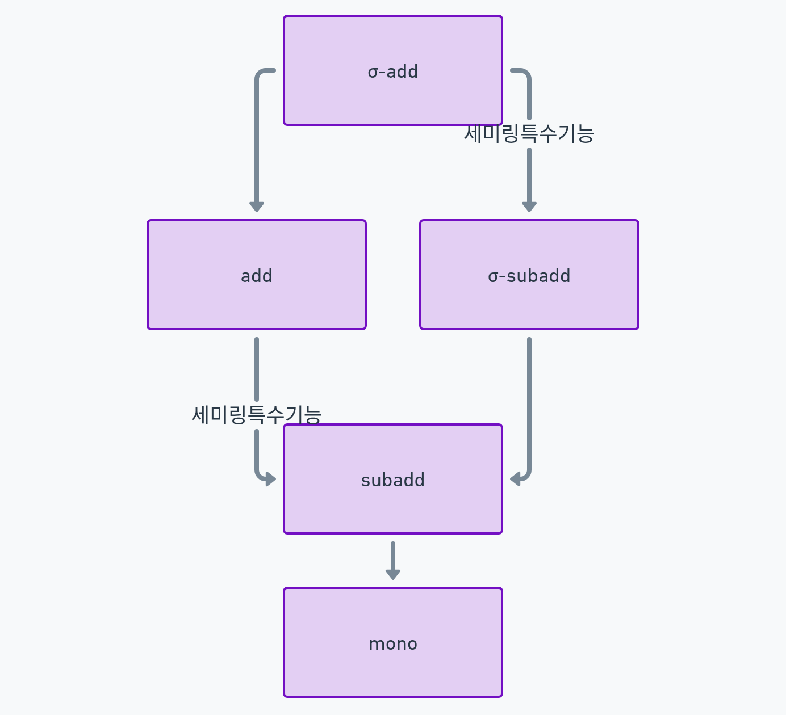

11wk - additivity, σ-additivity, subadditivity, σ-subadditivity
강의영상
궁금증
- 우리가 하고 싶은것은 “\({\cal A}\)에서 적당히 확률과 비슷한 집합함수 \(\tilde{P}\)를 정의하면, 그 \(\tilde{P}\)가 \(\sigma({\cal A})\)에서의 유일한 확률측도 \(\mathbb{P}\)로 업그레이드된다.” 를 보이는 것이다.
- 확률과 비슷한 집합함수라는 개념은 도데체 뭘까?
- 르벡메져와 비슷한 집합함수라는 개념도 있겠지? 그건 또 뭘까?
집합함수의 성질
- \(\Omega\)의 부분집합들의 모임 \({\cal A}\)에서 정의된 집합함수 \(\tilde{m}: {\cal A}\to [0,\infty]\), additivity, subadditivity, \(\sigma\)-additivity, \(\sigma\)-subadditivity 가 의미하는 바를 살펴보자.
교제에 따라서 집합함수 \(\tilde{m}: {\cal A}\to [\infty,\infty]\)를 고려하기도 하는데요. 우리는 \(\tilde{m}\)의 공역을 \([0,\infty]\)로 한정한 정의를 사용합니다. 또한 교재에 따라서 \({\cal A}\)가 어떠한 제약을 가져야함을 조건으로 거는 경우도 있는데요 (예를들면 \({\cal A}\)가 field 이어야 한다든지), 우리는 이러한 조건도 무시합니다. 즉 \({\cal A}\)는 어떠한 제약도 없는 일반적인 집합족이라 상상합니다.
# 정의1 – \(\tilde{m}\) is additive on \({\cal A}\)
\({\cal A}\subset 2^\Omega\) 에서의 집합함수 \(\tilde{m}:{\cal A} \to [0,\infty]\)을 고려하자. “집함함수 \(\tilde{m}\)이 \({\cal A}\) 에서 additive 하다”는 것은 아래가 성립한다는 의미이다.
\[\text{(1)} B_1,\dots, B_n \in {\cal A} ~~\text{(2)}\biguplus_{i=1}^{n}B_i \in {\cal A}~ \Longrightarrow ~ \tilde{m}\left(\biguplus_{i=1}^{n} B_{i}\right)=\sum_{i=1}^{n}\tilde{m}(B_i)\]
단, \(B_1,B_2,\cdots, B_n\)는 서로소인 집합열이다.
여기에서 \(\infty + \infty = \infty\)로 정의함.
# 예제1
\(\tilde{m}\) is add on \({\cal A}\)?
- \(\Omega = \{1,2\}\)
- \({\cal A}= \{\emptyset, \{1\},\{1,2\}\}\)
- \(\tilde{m}(\emptyset) = 0, \tilde{m}(\{1\}) = 1, \tilde{m}(\{1,2\})=1\)
(답) \(\tilde{m}\) is add on \({\cal A}\).
# 예제2
\(\tilde{m}\) is add on \({\cal A}\)?
- \(\Omega = \{1,2\}\)
- \({\cal A}= \{\emptyset, \{1\},\{1,2\}\}\)
- \(\tilde{m}(\emptyset) = 0, \tilde{m}(\{1\}) = 1, \tilde{m}(\{1,2\})=0\)
(답) \(\tilde{m}\) is add on \({\cal A}\).
# 예제3
\(\tilde{m}\) is add on \({\cal A}\)?
- \(\Omega = \{1,2\}\)
- \({\cal A}= \{\emptyset, \{1\}\}\)
- \(\tilde{m}(\emptyset) = 0, \tilde{m}(\{1\}) = 1\)
(답) \(\tilde{m}\) is add on \({\cal A}\).
# 예제4
\(\tilde{m}\) is add on \({\cal A}\)?
- \(\Omega = \{1,2\}\)
- \({\cal A}= \{\emptyset, \{1\}\}\)
- \(\tilde{m}(\emptyset) = 1, \tilde{m}(\{1\}) = 0\)
(답) \(\tilde{m}\) is not add on \({\cal A}\).
# 예제5
\(\tilde{m}\) is add on \({\cal A}\)?
- \(\Omega = \{1,2\}\)
- \({\cal A}= \{\emptyset\}\)
- \(\tilde{m}(\emptyset) = 1\)
(답) \(\tilde{m}\) is not add on \({\cal A}\).
Note: 이 예제를 보고 “아, 여기서 add를 만족하게 하려면 꼭 \(\tilde{m}(\emptyset)=0\)이어야 겠구나!” 라고 정리하고 싶지 않나요?
Note: 그런데 \(\tilde{m}(\emptyset)=\infty\)라면 어떨까요? 우리가 원하는 바는 아니지만 add가 성립해버리죠? 그래서 우리가 상식적인 측도를 생각할때는 \(\tilde{m}(\emptyset)=0\)라고 약속하는 것이 중요합니다. 사실은 이러한 약속을 지금 당장 하고 싶은데요, \(\emptyset \in {\cal A}\)이라는 보장이 없어서 \(\tilde{m}(\emptyset)=0\)을 미리 정의에 넣어놓고 시작할 순 없어요.
# 예제6
\(\tilde{m}\) is add on \({\cal A}\)?
- \(\Omega = \{1,2\}\)
- \({\cal A}= \{\emptyset,\{1\},\{2\},\Omega\}\)
- \(\tilde{m}(\emptyset) = 0, \tilde{m}(\{1\}) = 1, \tilde{m}(\{2\})= \infty, \tilde{m}(\Omega)=\infty\)
(답) \(\tilde{m}\) is add on \({\cal A}\).
# 정의2 – \(\tilde{m}\) is \(\sigma\)-additive on \({\cal A}\)
\({\cal A}\subset 2^\Omega\) 에서의 집합함수 \(\tilde{m}:{\cal A} \to [0,\infty]\)을 고려하자. “집함함수 \(\tilde{m}\)이 \({\cal A}\) 에서 \(\sigma\)-additive 하다”는 것은 아래가 성립한다는 의미이다.
\[\text{(1)} B_1,B_2,\cdots \in {\cal A} ~~\text{(2)}\biguplus_{i=1}^{\infty}B_i \in {\cal A}~ \Longrightarrow ~ \tilde{m}\left(\biguplus_{i=1}^{\infty} B_{i}\right)=\sum_{i=1}^{\infty}\tilde{m}(B_i)\]
단, \(B_1,B_2,\cdots\) 는 서로소인 집합열이다.
# 예제7 – counting msr 비슷한것
\(\tilde{m}\) is add on \({\cal A}\)? \(\tilde{m}\) is \(\sigma\)-add on \({\cal A}\)?
- \(\Omega = \mathbb{N}\)
- \({\cal A}= 2^\mathbb{N}\)
- \(\tilde{m}(A) = \begin{cases} |A| & \text{if $A$ is finite,} \\ \infty & \text{if $A$ is infinite.} \end{cases}\)
(답) \(\tilde{m}\) is \(\sigma\)-add on \({\cal A}\). \(\Rightarrow\) \(\tilde{m}\) is add on \({\cal A}\).
Note: \(\sigma\)-add imply add.
# 예제8
\(\tilde{m}\) is add on \({\cal A}\)? \(\tilde{m}\) is \(\sigma\)-add on \({\cal A}\)?
- \(\Omega = \mathbb{R}\)
- \({\cal A}= \{\{x\}: x \in \mathbb{R}\} \cup \{\emptyset, \mathbb{Q} , \mathbb{Q}^c, \mathbb{R}\}\)
- \(\tilde{m}(A) = \begin{cases} 0 & A = \{x\}, x\in \mathbb{R} \\ 0 & A = \emptyset \\ 1 & A=\mathbb{Q} \\ 2 & A=\mathbb{Q}^c \\ 3 & A=\mathbb{R} \end{cases}\)
(답) \(\tilde{m}\) is add but not \(\sigma\)-add on \({\cal A}\).
# 예제9
\(\tilde{m}\) is add on \({\cal A}\)? \(\tilde{m}\) is \(\sigma\)-add on \({\cal A}\)?
- \(\Omega = \mathbb{R}\)
- \({\cal A}= \{\{x\}: x \in \mathbb{R}\} \cup \{\emptyset, \mathbb{Q} , \mathbb{Q}^c, \mathbb{R}\}\)
- \(\tilde{m}(A) = \begin{cases} 0 & A = \{x\}, x\in \mathbb{R} \\ 0 & A = \emptyset \\ 0 & A=\mathbb{Q} \\ 2 & A=\mathbb{Q}^c \\ 2 & A=\mathbb{R} \end{cases}\)
(답) \(\tilde{m}\) is add and also \(\sigma\)-add on \({\cal A}\).
# 예제10
\(\tilde{m}\) is add on \({\cal A}\)? \(\tilde{m}\) is \(\sigma\)-add on \({\cal A}\)?
- \(\Omega = \mathbb{R}\)
- \({\cal A}= \{\{x\}: x \in \mathbb{R}\} \cup \{\emptyset, \mathbb{Q} , \mathbb{Q}^c, \mathbb{R}\}\)
- \(\tilde{m}(A) = \begin{cases} 1 & A = \{x\}, x\in \mathbb{R} \\ 0 & A = \emptyset \\ \infty & A=\mathbb{Q} \\ 0 & A=\mathbb{Q}^c \\ \infty & A=\mathbb{R} \end{cases}\)
(답) \(\tilde{m}\) is add and also \(\sigma\)-add on \({\cal A}\).
# 정의3– \(\tilde{m}\) is subadditive on \({\cal A}\)
\({\cal A}\subset 2^\Omega\) 에서의 집합함수 \(\tilde{m}:{\cal A} \to [0,\infty]\)을 고려하자. “집함함수 \(\tilde{m}\)이 \({\cal A}\) 에서 subadditive 하다”는 것은 아래가 성립한다는 의미이다.
\[\text{(1)} A, A_1,\dots, A_n \in {\cal A} ~~\text{(2)}A \subset \bigcup_{i=1}^{n}A_i ~ \Longrightarrow ~ \tilde{m}\left(A\right)\leq\sum_{i=1}^{n}\tilde{m}(A_i)\]
이 정의에서 subadditive는 monotone1을 암시한다. (당연히 monotone이 subadd랑 같은건 아님)
조건 (2) 대신에 \(A= \bigcup_{i=1}^{n}A_i\)인 경우만 subadd 라고 정의하는 교재도 존재한다. 이러한 정의에서는 subadditive가 monotone을 암시하지 않음.
# 예제11
\(\tilde{m}\) is add on \({\cal A}\)? \(\tilde{m}\) is subadd on \({\cal A}\)?
- \(\Omega = \{1,2,3\}\)
- \({\cal A}= \{\emptyset,\{1,2\},\{2,3\},\{1,2,3\}\}\)
- \(\tilde{m}(\emptyset) =\tilde{m}(\{1,2\}) = \tilde{m}(\{2,3\})=0, \tilde{m}(\{1,2,3\})=1\)
(답) \(\tilde{m}\) is add but not subadd on \({\cal A}\). Note that \(\tilde{m}\) is mono.
# 예제12
\(\tilde{m}\) is add on \({\cal A}\)? \(\tilde{m}\) is subadd on \({\cal A}\)?
- \(\Omega = \{1,2\}\)
- \({\cal A}= \{\emptyset,\{1\},\{2\},\Omega\}\)
- \(\tilde{m}(\emptyset) =0, \tilde{m}(\{1\})=\tilde{m}(\{2\})=\tilde{m}(\{1,2\})=1\)
(답) \(\tilde{m}\) is not add but subadd(\(\Rightarrow\) mono) on \({\cal A}\).
# 예제13
\(\tilde{m}\) is add on \({\cal A}\)? \(\tilde{m}\) is subadd on \({\cal A}\)?
- \(\Omega = \mathbb{R}\)
- \({\cal A}= \{\emptyset,\mathbb{Q},\mathbb{Q}^c,\Omega\}\)
- \(\tilde{m}(\emptyset) =0, \tilde{m}(\mathbb{Q})=\tilde{m}(\mathbb{Q}^c)=\tilde{m}(\mathbb{R})=\infty\)
(답) \(\tilde{m}\) is add and also subadd(\(\Rightarrow\) mono) on \({\cal A}\).
Note: 만약에 \(\tilde{m}(\emptyset)=0, \tilde{m}(\mathbb{Q})=\tilde{m}(\mathbb{Q}^c)=\tilde{m}(\mathbb{R})=1\) 이었다면 \(\tilde{m}\)은 subadd는 만족하지만 add는 만족하지 않음. (앞의 예제와 비슷한상황)
# 예제14
\(\tilde{m}\) is add on \({\cal A}\)? \(\tilde{m}\) is subadd on \({\cal A}\)?
- \(\Omega = \{1,2,3\}\)
- \({\cal A}= \{\emptyset,\{1\},\{1,2\},\{1,3\},\{2,3\},\Omega\}\)
- \(\tilde{m}(A)=\begin{cases} 0 & A = \emptyset \\ 1 & A = \{1\} \\ 3 & A = \{1,2\} \\ 3 & A = \{1,3\} \\ 8 & A = \{2,3\} \\ 9 & A = \{1,2,3\} \end{cases}\)
(답) \(\tilde{m}\) is add and not subadd on \({\cal A}\). Note that \(\tilde{m}\) is (strictly) mono.
# 예제10 – 다시 풀기
\(\tilde{m}\)가 이상하다고 느낀 원인이 무엇이었을까?
- \(\Omega = \mathbb{R}\)
- \({\cal A}= \{\{x\}: x \in \mathbb{R}\} \cup \{\emptyset, \mathbb{Q} , \mathbb{Q}^c, \mathbb{R}\}\)
- \(\tilde{m}(A) = \begin{cases} 1 & A = \{x\}, x\in \mathbb{R} \\ 0 & A = \emptyset \\ \infty & A=\mathbb{Q} \\ 0 & A=\mathbb{Q}^c \\ \infty & A=\mathbb{R} \end{cases}\)
(답) \(\tilde{m}\) is add and also \(\sigma\)-add on \({\cal A}\) but not subadd on \({\cal A}\). Note that \(\tilde{m}\) is also not mono.
# 정의4. \(\tilde{m}\) is \(\sigma\)-subadditive on \({\cal A}\)
\({\cal A}\subset 2^\Omega\) 에서의 집합함수 \(\tilde{m}:{\cal A} \to [0,\infty]\)을 고려하자. “집함함수 \(\tilde{m}\)이 \({\cal A}\) 에서 \(\sigma\)-subadditive 하다”는 것은 아래가 성립한다는 의미이다.
\[\text{(1)} A, A_1, A_2 \cdots \in {\cal A} ~~\text{(2)}A \subset \bigcup_{i=1}^{\infty}A_i ~ \Longrightarrow ~ \tilde{m}\left(A\right)\leq\sum_{i=1}^{\infty}\tilde{m}(A_i)\]
#
# 예제15
\(\tilde{m}\) is subadd on \({\cal A}\)? \(\tilde{m}\) is \(\sigma\)-subadd on \({\cal A}\)?
- \(\Omega = \mathbb{R}\)
- \({\cal A}= \{\emptyset,\mathbb{R}\} \cup \{[-n,n]: n \in \mathbb{N}\}\)
- \(\tilde{m}(A) = \begin{cases} \infty & A = \mathbb{R} \\ 0 & o.w. \end{cases}\)
(답) \(\tilde{m}\) is subadd but not \(\sigma\)-subadd on \({\cal A}\).
Note: \(\tilde{m}\)은 심지어 add, \(\sigma\)-add도 성립함.
# 성질 – \({\cal A} \subset 2^\Omega\), \(\tilde{m}: {\cal A} \to [0,\infty]\) 라고 하자. 함수 \(\tilde{m}\)에 대하여 체크해볼만한 성질들이 있다.
- \(\sigma\)-additivity \(\Rightarrow\) additivity
- \(\sigma\)-subadditivity \(\Rightarrow\) subadditivity
- subadditivity \(\Rightarrow\) monotone
- \(\Omega\)가 유한집합일 경우
- \(\sigma\)-additivity \(\Leftrightarrow\) additivity
- \(\sigma\)-subadditivity \(\Leftrightarrow\) subadditivity
# 예제16
\(\tilde{m}\) is add on \({\cal A}\)?
- \(\Omega = \{1,2,3,4\}\)
- \({\cal A}= \{\emptyset, \{1\},\{1,2,3\},\{1,3,4\},\{1,2,4\},\{2,3,4\}\}\)
- \(\tilde{m}(A) = \begin{cases} 0 & A=\emptyset\\ 1 & A=\{1\}\\ 1 & A=\{1,2,3\}\\ 1 & A=\{1,3,4\}\\ 1 & A=\{1,2,4\}\\ 1 & A=\{2,3,4\} \end{cases}\)
(풀이) \(\tilde{m}\)은 \({\cal A}\)에서 add, \(\sigma\)-add, subadd, \(\sigma\)-subadd임. 그런데 뭔가 이상함.
- 결론: \({\cal A}\) 자체에서 뭔가 제약이 있어야겠는데?
- \(\tilde{m}(\{1\})=1\), \(\tilde{m}(\{1,2,3\})=1\)이라고 정의해놓고 \(\tilde{m}(\{2,3\})\)의 값을 정의안하는건 매우 치사함.
- \(\tilde{m}(\{2,3\})=0\)이라고 명확하게 정의하던가, 아니면 \(\tilde{m}(\{2,3\})=\tilde{m}(\{2\})=\tilde{m}(\{3\})=0\)이라고 정의해아함.
- 외우세요: 측도 비스무리한 집합함수라도 정의하려면 \({\cal A}\)는 “최소” 세미링이어야함.
# 예제16 – 다시보기
\(\tilde{m}\) is add on \({\cal A}\)?
- \(\Omega = \{1,2,3,4\}\)
- \({\cal A}= \{\emptyset, \{1\},\{1,2,3\},\{1,3,4\},\{1,2,4\},\{2,3,4\}\}\)
- \(\tilde{m}(A) = \begin{cases} 0 & A=\emptyset\\ 1 & A=\{1\}\\ 1 & A=\{1,2,3\}\\ 1 & A=\{1,3,4\}\\ 1 & A=\{1,2,4\}\\ 1 & A=\{2,3,4\} \end{cases}\)
(풀이) \(\tilde{m}\)은 \({\cal A}\)에서 add, \(\sigma\)-add, subadd, \(\sigma\)-subadd, monotone임. 그런데 \({\cal A}\)가 세미링이 아니네? (=확률 혹은 측도 비슷한걸 정의할 최소한의 준비도 안되어있잖아?)
\({\cal A}\)가 세미링이라고 가정한다면?
- 이제부터 \({\cal A}\)는 세미링이라고 가정하자. 이 추가가정은 많은 변화를 이끌어낸다. 결론을 먼저 말하면, \({\cal A}\)이 세미링이라면 addtivity는 monotonicity 와 subaddtivity를 임플라이하고 \(\sigma\)-addivity는 \(\sigma\)-subadditivity를 임플라이한다. 즉 아래와 같이 된다.

# 증명예제1 – \({\cal A}\subset 2^\Omega\) 에서 집합함수 \(\tilde{m}:{\cal A} \to [0,\infty]\)를 고려하자. 추가적으로 \({\cal A}\)는 세미링이라고 가정하고 \(\tilde{m}(\emptyset)=0\)라고 가정하자. 이제 \(1 \Rightarrow 2\) 임을 보여라.
- \(\tilde{m}\) is addtive on \({\cal A}\)
- \(\tilde{m}\) is monotone on \({\cal A}\)
(증명) 함수 \(\tilde{m}\)이 \({\cal A}\)에서 monotone이라는 의미는 \(A\subset B\)를 만족하는 임의의 \(A,B \in {\cal A}\) 에 대하여 아래를 만족한다는 의미이다.
\[\tilde{m}(A) \leq \tilde{m}(B)\]
그런데 아래의 식이 성립하므로
\[B=A \uplus (B-A)\]
위의 식의 양변에 \(\tilde{m}\)을 취하면, \(\tilde{m}\)의 add성질 때문에 아래가 성립하여 증명이 완료될 것 같다.
\[\tilde{m}(B)=\tilde{m}(A) + \tilde{m}(B-A)\]
그렇지만 세미링 \({\cal A}\)는 차집합에 닫혀있지 않으므로 \(A,B \in {\cal A}\) 라고 해도 \(B-A \in {\cal A}\) 라는 보장이 없다. 따라서 \(\tilde{m}(B-A)\) 와 같은 표현은 불가능하다. 대신에 \({\cal A}\)는 차집합에 반쯤 닫혀 있으므로 아래와 같은 표현은 가능하다.
\[\tilde{m}(B)=\tilde{m}(A) + \sum_{i=1}^{n}\tilde{m}(C_i)\]
(당연히) 이때 \(C_1,\dots,C_n\)은 서로소이고, 모두 \({\cal A}\)의 원소이며 \(\biguplus_{i=1}^{n}C_i=B-A\)를 만족한다. 따라서 증명이 완료되었다.
사실 \(\tilde{m}(\emptyset)=0\)은 꼭 \(1 \Rightarrow 2\)임을 보이는데 필요한 조건은 아님. 에를들어 모든 메져값이 \(\infty\)이어도 위의 논의가 그대로 성립함. \(\tilde{m}(\emptyset)=0\)는 결론을 얻기위한 조건이 아니라, 그냥 \(\tilde{m}(\emptyset)=\infty\)를 고려할 필요가 없어서 서술적으로 들어간 조건임. 즉 “\(\tilde{m}(\emptyset)=\infty\)인 경우는 (따질수는 있지만) 따지지 않기로 하자” 정도의 뉘앙스.
#
# 증명예제2 – \({\cal A}\subset 2^\Omega\) 에서의 집합함수 \(\tilde{m}:{\cal A} \to [0,\infty]\)을 고려하자. 추가적으로 \({\cal A}\)는 세미링이라고 가정하고 \(\tilde{m}(\emptyset)=0\)라고 가정하자. 이제 \(1 \Rightarrow 2\) 임을 보여라.
- \(\tilde{m}\) is addtivie on \({\cal A}\)
- \(\tilde{m}\) is subaddtive on \({\cal A}\)
(증명)
일반성을 잃지 않고, 증명하고자 하는 바를 아래로 간략화 할 수 있다.
\(A, A_1, A_2 \in {\cal A}\) and \(A \subset (A_1\cup A_2)\) \(\Rightarrow\) \(\tilde{m}(A) \leq \tilde{m}(A_1) + \tilde{m}(A_2)\)
일단 \(B_1=A_1\), \(B_2=A_2-A_1 =\uplus_{i=1}^{n}C_i\) 을 이용하여 아래의 식을 우선 정리하자.
(a) \(A_1 \cup A_2 = B_1 \uplus B_2 = B_1 \uplus C_1 \uplus \dots \uplus C_n\)
(b) \(A_2 = (A_1 \cap A_2) \uplus C_1 \uplus \dots \uplus C_n\)
이제 \(A \subset (A_1 \cup A_2)\) 를 이용하면 \[A = A \cap (A_1 \cup A_2) = A \cap (B_1\uplus C_1\uplus\dots\uplus C_n)\]를 얻을 수 있고 따라서 \(A\)는 아래와 같이 분해할 수 있다.
\[A = (A\cap B_1)\uplus (A\cap C_1) \uplus \dots \uplus (A\cap C_n)\]
\(\tilde{m}\)이 add 함을 이용하면 위의 식을 아래와 같이 쓸 수 있다.
\[\tilde{m}(A) = \tilde{m}(A\cap B_1)+ \tilde{m}(A\cap C_1) + \dots + \tilde{m}(A\cap C_n)\]
여기에서 \(A\in {\cal A}\), \(A \cap B_1 \in {\cal A}\), \(A \cap C_i \in {\cal A}\) 이므로, 위의 식에서 \(\tilde{m}(\star)\) 와 같은 표현이 모두 가능함을 체크하자. 이제 \(\tilde{m}\)이 monotone 임을 이용하면 (monotone은 add에 의하여 imply 되었음)
\[\tilde{m}(A) \leq \textcolor{red}{\tilde{m}(B_1)}+ \textcolor{blue}{\tilde{m}(C_1)} + \dots + \textcolor{blue}{\tilde{m}(C_n)}\quad \cdots(*)\]
임을 알 수 있다. 이제 (b)의 양변에 함수 \(\tilde{m}\)을 취하여 아래를 얻자.
\[\tilde{m}(A_2) = \tilde{m}(A_1 \cap A_2) +\tilde{m}(C_1)+ \dots \tilde{m}(C_n) \quad\cdots(**)\]
이제 \(\tilde{m}(A_1)=\tilde{m}(B_1)\) 임을 이용하여 \((*)\)의 \(\textcolor{red}{빨간색부분}\)을 정리하고 \((**)\)를 이용하여 \((*)\)의 \(\textcolor{blue}{파란색부분}\)을 정리하면 아래를 얻을 수 있다. 따라서 증명끝.
\[\tilde{m}(A) \leq \tilde{m}(A_1) + \tilde{m}(A_2)\]
- 따라서 \({\cal A}\)가 세미링일 경우 (그리고 \(\tilde{m}(\emptyset)=0\)일 경우)
- additivity \(\Rightarrow\) monotonicity (\(A \subset B \Rightarrow \tilde{m}(A)\leq \tilde{m}(B)\))
- additivity \(\Rightarrow\) sub-additivity
- \(\sigma\)-additivity \(\Rightarrow\) \(\sigma\)-subadditivity
#
Footnotes
\(\tilde{m}(A)\leq \tilde{m}(B), \forall A,B \in {\cal A}\) with \(A\subset B\)↩︎